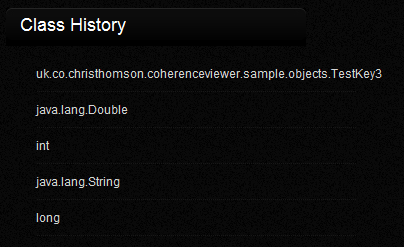
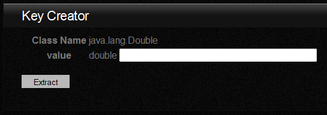
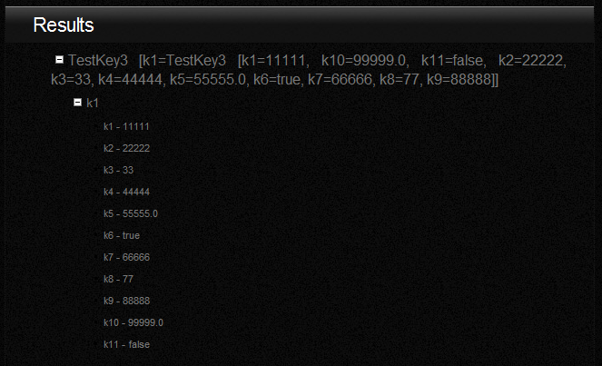

The first step to extracting data is to find the Java class that represents the key object for the value
that you are trying to extract

For convenience, classes that you have previously searched for are listed in
a panel on the right of the web page. Clicking on one of these links will
load the key display for this object

The first step to extracting data is to find the Java class that represents the key object for the value
that you are trying to extract

If a object is found matching the specified key, the object will be displayed in the
panel below the key specification. The default output is the result of calling
toString(). However, as a lot of objects don't always have a comprehensive
toString() we also build a expandable tree showing each of the properties
in the result object
